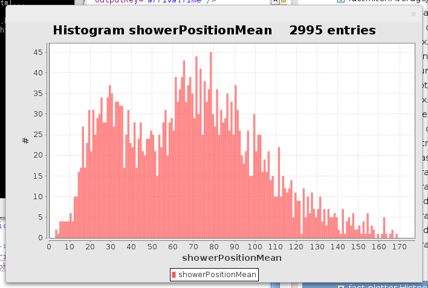

Histogram Plotter
Maybe the most widely used plotter is the HistogramPlotter. It allows you to count and display single values for each event . The binWidth is customizable and you can specify whether the y axis should be in a logarithmic scale or not. In the following xml we chart the mean of the arrival time in a shower.
...
<stream id="fact-data" ... />
<process input="fact-data">
...
<!-- calculate arrival times and all the other interesting stuff here -->
...
<fact.utils.SelectIndecesFromArray key="risingedge" indices="shower" outputKey="showerPos" />
<fact.statistics.ArrayMean key="showerPos" outputKey="showerPositionMean" />
<fact.plotter.HistogramPlotter key="showerPositionMean" binWidth="1" logAxis="false" color="#666699" />
</process>
...
During the processing the number of entries in the histogram will be updated and chart will be redrawn.
